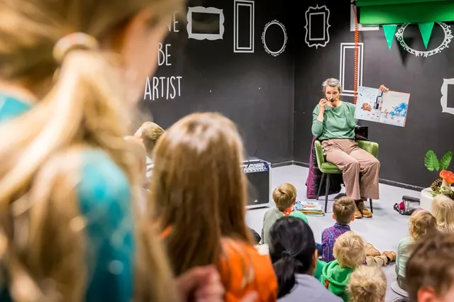

Nieuws ·
Bibliotheek Gelderland Zuid viert Nationale Voorleesdagen 2024

Van 24 januari tot 3 februari viert Bibliotheek Gelderland Zuid de Nationale Voorleesdagen met een reeks evenementen voor kinderen van 0 tot 6 jaar. Centraal staat het Prentenboek van het Jaar 2024, “Help! Een verrassing!” door Miriam Bos, een verhaal dat kinderen helpt hun woordenschat en empathie te ontwikkelen.
Activiteiten omvatten ‘Voorleespret voor peuters’ op verschillende locaties en een speciaal Voorleesfeest in Bibliotheek Mariënburg. De bibliotheek biedt ook interactieve voorstellingen aan, zoals ‘Loet krijgt een verrassing’ en een levendige vertolking van het Prentenboek van het Jaar door poppenspeler Jogchem Jalink.
Nieuwe jeugdleden ontvangen een voorleesknuffeltje van vosje August, en er is een speciale zoekplaat beschikbaar. Er is zelfs een kans om een jaarabonnement op Burgers’ Zoo te winnen. Bezoek www.obgz.nl/nationalevoorleesdagen voor meer informatie en tickets.